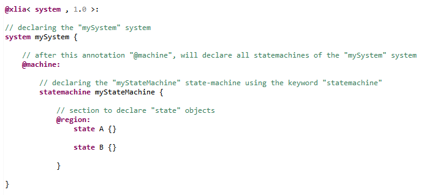
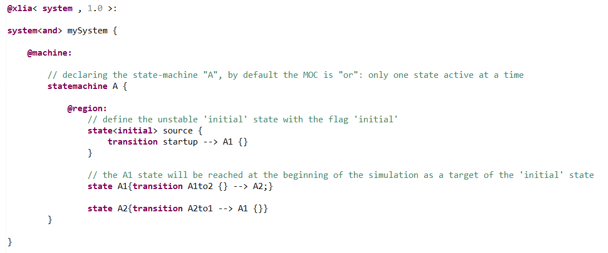
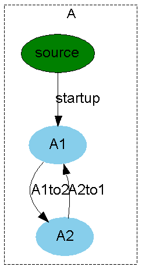
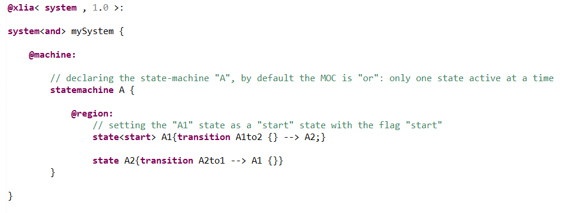
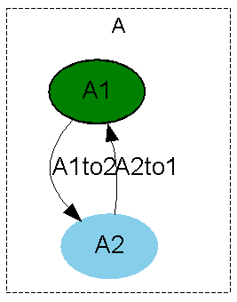

This kind of statemachine models simple automata. The submachines of an automaton are machines of type state.
Those "state" objects are declared within the "@region:" section :
An automaton may have several states but they being active is controlled. Therefore, the statemachine is declared with a "moc" either "or" or "xor".
Difference between "or" and "xor" :
Initializing an "automaton" statemachine requires to specify which one is/are its starting states. Indeed, the engine needs to know at which state the machine must be at the beginning of the simulation
There are two ways of doing so in XLIA. Those two ways use "state flags".
For explaining purposes, we'll use a very simple example. Let's suppose we have a statemachine A with two possible states during execution : A1 and A2.
Le'ts suppose we want A to begin at the state A1.
With this method, we must add a third state to the state-machine A. This state is an unstable "source-state" that will be immediately left at the beginning of the simulation.
To do that, we define an "initialstate" by using the flag "initial". We fit this "initialstate" with a transition to the "A1" state.
By following this method, we will end up with the following code and state-machine :
 Remarks :
With this method there is no need to have a third state. We just add the flag "start" to the "A1" state so that the "A" state-machine will go to this state at the beginning of the simulation.
 Remarks :